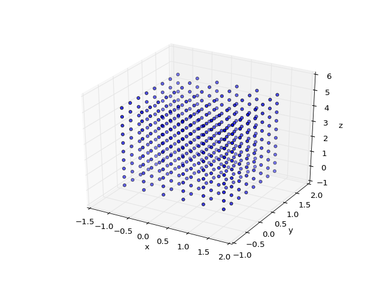
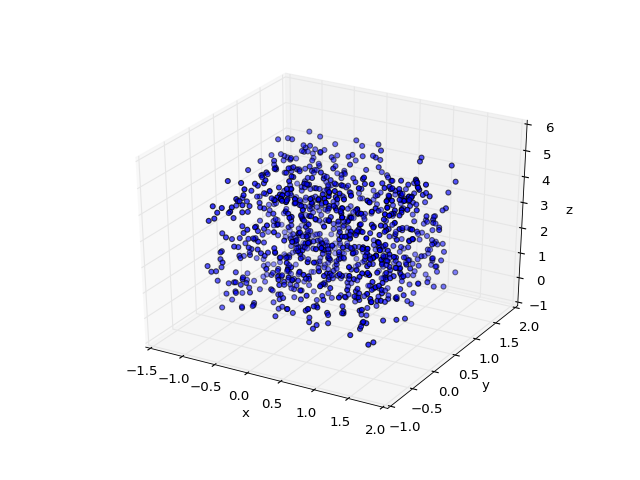
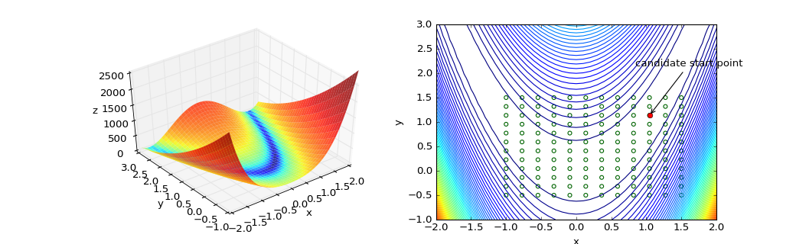

Optimization¶
base |
|
base.minimize(fun, x0[, args, method, jac, ...]) |
Scipy.optimize.minimize-style wrapper for NLopt and scipy’s minimize. |
base.Bound([lower, upper, shape]) |
Define bounds on a variable for the optimiser. |
base.Positive([lower, upper, shape]) |
Define a positive only bound for the optimiser. |
base.structured_minimizer(minimizer) |
Allow an optimizer to accept a list of parameters to optimize, rather than just a flattened array. |
base.structured_sgd(sgd) |
Allow stochastic gradients to accept a list of parameters to optimize, rather than just a flattened array. |
base.logtrick_minimizer(minimizer) |
Log-Trick decorator for optimizers. |
base.logtrick_sgd(sgd) |
Log-Trick decorator for stochastic gradients. |
base.candidate_start_points_lattice(bounds) |
Generate candidate starting points on a uniform grid within a hyperrectangle. |
base.candidate_start_points_random(bounds[, ...]) |
Randomly generate candidate starting points uniformly within a hyperrectangle. |
sgd.sgd(fun, x0, Data[, args, bounds, ...]) |
Stochastic Gradient Descent, using ADADELTA for setting the learning rate. |
Optimizer Equivalency Table¶
| scipy.optimize | NLopt |
|---|---|
| Nelder-Mead | LN_NELDERMEAD |
| Powell | ? |
| CG | ? |
| BFGS | LD_LBFGS |
| Newton-CG | LD_TNEWTON_PRECOND_RESTART
LD_TNEWTON_PRECOND
LD_TNEWTON_RESTART
LD_TNEWTON
|
| L-BFGS-B | LD_LBFGS |
| TNC | LD_TNEWTON_PRECOND_RESTART
LD_TNEWTON_PRECOND
LD_TNEWTON_RESTART
LD_TNEWTON
|
| COBYLA | LN_COBYLA |
| SLSQP | LD_SLSQP |
| dogleg | Requires second-order gradients |
| trust-ncg | Requires second-order gradients |
Candidate Starting Points Example¶
import matplotlib.pyplot as plt
from mpl_toolkits.mplot3d import Axes3D
from revrand.optimize import candidate_start_points_lattice
fig = plt.figure()
ax = plt.axes(projection='3d')
ax.scatter(*candidate_start_points_lattice([(-1, 1.5), (-.5, 1.5), (0, 5)],
[6, 8, 10]))
ax.set_xlabel('x')
ax.set_ylabel('y')
ax.set_zlabel('z')
plt.show()
(Source code, png, hires.png, pdf)
{kind=link}
{kind=link}

import matplotlib.pyplot as plt
from mpl_toolkits.mplot3d import Axes3D
from revrand.optimize import candidate_start_points_random
fig = plt.figure()
ax = plt.axes(projection='3d')
ax.scatter(*candidate_start_points_random([(-1, 1.5), (-.5, 1.5), (0, 5)]))
ax.set_xlabel('x')
ax.set_ylabel('y')
ax.set_zlabel('z')
plt.show()
(Source code, png, hires.png, pdf)
{kind=link}
{kind=link}

import matplotlib.pyplot as plt
import numpy as np
from scipy.optimize import rosen
from matplotlib.colors import LogNorm
from revrand.optimize import candidate_start_points_lattice
from revrand.utils import unvectorize_args
_rosen = unvectorize_args(rosen)
y, x = np.mgrid[-1:3.1:0.1, -2:2.2:0.1]
z = _rosen(x, y)
candidates = candidate_start_points_lattice([(-1, 1.5), (-.5, 1.5)],
nums=12)
candidates_min = candidates[:, np.argmin(rosen(candidates))]
fig = plt.figure(figsize=(13, 4))
ax1 = fig.add_subplot(121, projection='3d', azim=-128, elev=43)
ax1.plot_surface(x, y, z, norm=LogNorm(), rstride=1, cstride=1,
cmap=plt.cm.jet, alpha=0.8, edgecolor='none')
ax1.set_xlim((-2, 2.0))
ax1.set_ylim((-1, 3.0))
ax1.set_zlim((0, 2500))
ax1.set_xlabel('x')
ax1.set_ylabel('y')
ax1.set_zlabel('z')
ax2 = fig.add_subplot(122)
ax2.contour(x, y, z, 75)
ax2.scatter(*candidates, facecolor='none', edgecolor='DarkGreen')
ax2.plot([candidates_min[0]], [candidates_min[1]], 'ro')
ax2.annotate('candidate start point', xy=candidates_min,
xytext=candidates_min+np.array([-.2, 1]),
arrowprops=dict(arrowstyle='->', facecolor='black'))
ax2.set_xlim((-2, 2.0))
ax2.set_ylim((-1, 3.0))
ax2.set_xlabel('x')
ax2.set_ylabel('y')
plt.show()
(Source code, png, hires.png, pdf)
{kind=link}
{kind=link}
